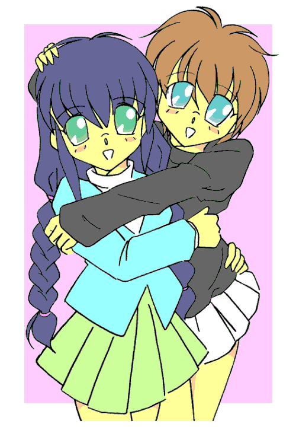

こんにちは、初めまして、私は真城華代と申します。
最近は本当に心の寂しい人ばかり、そんな皆さんのために私は活動しています。まだまだ未熟ですけれども、たまたま私が通りかかりましたとき、お悩みなどございましたら是非ともお申し付け下さい。私に出来る範囲で依頼人の方のお悩みを露散させてご覧に入れましょう。どうぞお気軽にお申し付け下さいませ。
報酬ですか？いえ、お金は頂いておりません。お客様が満足頂ければ、それが何よりの報酬でございます。
さて、今日のお客様は……。
「はぁ、明日はクリスマスだよなぁ……」
既に一足早くクリスマスムード満点になっている商店街の歩道を歩きながら、山村幸夫は一人ポツリと呟いた。幸夫は太った首周りに食い込むような制服の詰め襟を少しゆるめると、ふぅ、とため息をつく。隣を同じ制服を着た親友の夕霧俊介が歩いているのだが、その言葉は別段彼に向けて発せられた言葉ではない。ただの幸夫の独り言だ。しかし、俊介は耳ざとくその言葉を聞き漏らさない。
「クリスマスがどうかしたのか、幸夫？」
親友のそのセリフに、幸夫は俊介の顔を少し見上げるように眺めた後、再び、あたりのムードにそぐわない暗いため息を長々とついた。
「おいおい、人の顔を見て何でため息なんだよ！」
その暗い様子に、俊介は努めて明るく突っ込みを入れるが、ムードはいっこうに変わる様子がなかった。
幸夫は暗いムードを引きずったまま、肩を落として背を丸めて歩いている。ただでさえ俊介と頭一つ分以上も身長が違うのに、今の幸夫はそれ以上に小さく見える。その代わりといってはなんだが、幸夫は俊介よりも遙かに横幅があった。言葉は悪いがいわゆるチビデブというやつだ。
さらに悪いことに、幸夫の顔はぶつぶつのニキビに覆われている。本人、身長と体重だけでも十二分にコンプレックスなのに、その上容貌にまで悩まされているのだ。それに対して、隣を歩く俊介はスマートで顔もよかった。身長こそ、そこそこ程度だが、甘いルックスでファンの女の子も多いことだろう。
幸夫は再び俊介の顔を見上げて、うらやましそうな目をする。
「おまえは良いよな。クリスマスを一緒に過ごす彼女とかいるんだろ？」
「はぁ？そんなのいるわけないだろ」
「嘘付け。学校じゃ、女子の間におまえのファンクラブだってあるんだぞ」
「それはそれ、これはこれ。オレは興味ないね」
俊介の言葉は嘘ではなかった。俊介はその外見から学校の女子にかなりもてているのだが、誰か特定の彼女を作ったという噂はトンと聞かない。それどころか、浮いた話一つないのだ。もっとも、そんなクールなところがファンクラブが出来るほどにもてている一因だったりするのだが。
「じゃあ、俊介はクリスマスどうするんだ？」
「オレは予定無しだな。幸夫は？」
「ボクに予定があるわけないじゃないか……。もしかしてイヤミか？」
「いやいや、そんなことないって。でも、それならちょうど良いじゃないか。一緒にカラオケでも行って騒ごうぜ。ダチ同士で遊び回るクリスマスってのも悪くないだろ？」
「う〜ん、そうだなぁ」
幸夫と俊介は中学時代にクラスが同じになったのを縁に友達になって以来の付き合いだ。一方は不細工、一方は美男子というデコボココンビだが、二人の仲は親友といっていいほどだ。もう既に三年以上の付き合いになる。少々暗めで閉じこもりがちの幸夫に、明るく社交的な俊介。何故ここまで違う二人が友達同士なのかをいぶかしむ者も学校には少なくないが、得てして友達同士というのはそういうモノなのだろう。
「じゃあ、明日の２４日はいつもの駅前の噴水で合流な」
「おまえ……本当に予定ないのか？」
「くどいなぁ。ないって言ってるだろ」
幸夫にとっては、ルックスの良い俊介に恋人などがいないのが不思議でならなかった。もっとも、長い付き合いの幸夫ですら気が付かないように隠れて女の子と付き合っているとも思えないので嘘ではないのだろう。
友達との遊びの予定とはいえ、クリスマスの予定が決まったからだろうか、少しだけ幸夫の表情がほころぶ。
「だけど、来年こそは彼女欲しいなぁ……。まぁ、ボクの外見じゃ到底無理だけど」
「そんなことないって。幸夫には幸夫の良さがあるさ」
「そう言ってくれるのは俊介だけだよ。女子にはキモイキモイ言われるし、へこむよなぁ」
「気にするなって。あいつら、見る目がないんだよ。
おっと、今日は母さんに買い物を頼まれてるんだった。オレ、そこのスーパーに寄ってくから」
「わかった。じゃあ、また明日」
「おう、明日は彼女のいない寂しい野郎同士、ガンガン歌いまくろうぜ」
俊介は軽くガッツポーズをみせて、そして近くのスーパーへ走っていった。一人取り残された幸夫は、クリスマスムード満点の商店街をグルッと一望してから再び軽く、ふぅ、と息を吐いた。しかし、先ほどよりは随分と明るい表情をしている。きっと俊介のおかげなのだろう。
幸夫は俊介の後ろ姿を見送った後、白い息を吐きながら家路を急いだ。
幸夫は赤と緑に彩られた商店街を抜け、やがて静かな住宅街に出た。幸夫の家はもう少し先だ。ふと見ると、チラホラと庭の樹に電飾を施した家がある。まだ明るいので電気は灯っていないが、夜になればさぞ綺麗だろう。幸夫は今でこそクリスマスを嫌っていたが、本来はお祭り事は嫌いではなかった。
そのまま家路を歩いていると、ひときわ目を引く飾り付けの家があった。モミの木ではないところが残念だったが、その家の飾り付けは相当に凝っていた。遠目には完全にクリスマスツリーだ。電飾はもちろん、こまごまとしたオーナメントが一面に飾り付けられ、真っ白い綿の雪が全体に巻き付いている。幸夫は思わず見とれて足を止める。
「綺麗なクリスマスツリーですね」
ふいに幸夫の隣から声がした。自分一人だと思っていた幸夫はビックリしてそちらに振り返る。
そこには一人の少女が立っていた。雪のように真っ白な服を纏った可愛らしい少女だ。幸夫は一瞬クリスマスの妖精かと見まごうが、非現実的だとその思いを振り払う。しかし、それほどまでに可愛い少女だった。まだ小学生ぐらいだろうか。見慣れないが、近所の子供ではないのかもしれない。
幸夫にロリコンのケは無いが、それでも思わず目を奪われてしまう。少女はそんな幸夫の様子にかまわず、相変わらずクリスマスツリーを眺めていた。そして、淡々と続ける。
「夜になったらさぞ綺麗でしょうね。後で、もう一度来ようかなぁ……」
と、そこまで一人ごちてから、突然思い出したように少女は幸夫の方へ向き直る。そして、少女にしてはやけに手慣れた様子でポシェットから一枚の名刺を取り出した。
「あっ、申し遅れました。私、こういうものです」
（最近の小学生は名刺なんて持ってるんだ……）
幸夫はそう思いつつ、何とはなしに少女の差し出した名刺を受け取った。
『ココロとカラダの悩み、お受け致します。 真城華代』
その名刺はシンプルにそう印字されていた。
「ココロとカラダの悩み？」
せいぜい、小学校名とクラス名ぐらいが記入されている程度だろうと思っていたためか、予想外の文面に幸夫は思わず口に出して読み上げていた。その言葉に、少女が反応する。
「はい、私、セールスレディをしてるんです。お兄さん、何か悩みありませんか？」
不思議な感じだった。背の低い幸夫よりもさらに二回り以上小さな少女が「悩みありませんか？」と尋ねてきているのだ。しかも、そう尋ねるのがごく当たり前であるかのような態度だったため、幸夫はよけい戸惑ってしまう。幸夫は名刺と少女を交互に眺めつつ、目をパチクリとする。
そんな様子に、少女は一方的に言葉を重ねてきた。
「お兄さんの悩み、話してくれたら私が解決してあげますよ」
やや沈黙があって、幸夫がポツリと呟いた。
「悩み……か」
「そう、悩みです。何かありますよね？」
幸夫の言葉に少女が嬉しそうに食いついてくる。何かの遊びなのだろうか？それとも――。
それとも、クリスマスの妖精が寂しい男子高校生の願いを叶えるために現れたのか。
いやいや、幾らなんでもそれはファンタジーが過ぎるというものだ。だいいち、相手は確かに目の前に立っている。少なくても淡く消えてしまいそうな妖精なんかじゃない生身の存在だ。幸夫は一瞬よぎった自分の考えに苦笑する。クリスマスムードにあてられて感傷的になりすぎていたのだろう。
まあいい、少しぐらい子供の遊びに付き合う程度の時間的な余裕はある。そう思った幸夫だったが、意に反して口をついて出た言葉は、決して遊びなどではなかった。
「悩みなんて、ありすぎてわからないよ」
それは幸夫の本音だった。体型だって、容姿だって、性格だってコンプレックスだらけだ。彼女も欲しいし、他にも悩みなんて数えだしたらきりがない。しかし、そんなことを言うつもりはなかったのだ。だが、思わずそう喋っていた。
それはクリスマスという特殊なムードがそうさせたのか、それともこの少女の持つ独特の雰囲気の影響なのか、幸夫には既に子供の遊びに付き合っているという意識はなかった。少女はその答えに少し当惑した様子を見せて「でも、悩みを具体的に言ってもらえないと困ります」と呟いた。
「具体的に……」
その言葉に、幸夫は閃くモノがあった。それは、幸夫が常々感じている問題だった。この悩みならば、あれやこれやのコンプレックスよりも明確だし具体的だろう。そう思った幸夫は、その思いつきを口にした。
「実はね、ボクには大切な友達がいるんだ。その友達は、ボクと違って凄く格好いいんだけど、こんな醜いボクと仲良くしてくれるんだ。すごく、良いヤツだろ？
でも、ボクはちょっと心苦しいんだ」
「どうしてですか？」
「ボクと友達であることで、あいつは周囲に変人扱いを受けてるんだ。特に女子からは不思議がられている。なんで、あんなヤツと――ってね。あいつは学校にファンクラブがあるぐらいもてるのに、特定の彼女がいないらしいんだ。それも、もしかしたらボクなんかと仲良くしてるからかも知れない。
だから、ボクはせめて普通の容姿になりたい。あいつと並んで歩いて釣り合うぐらいになりたいんだ。
元がこんなだから、決して高望みはしないよ。でも、せめてあいつにふさわしい友達になりたい。あいつが後ろ指をさされない程度になれたら十分だよ」
そこまで喋ってから、幸夫はふと子供相手に何を喋っているんだと我に返った。そして、いきなりこんな独白を受けて、少女もさぞ当惑しているだろうと目を向けると――。
そこには誰もいなかった。
先ほどまで、少女が立っていたところには既に誰もいない。あれ？と思っていると、不意に背後から声をかけられた。
「お兄さんの悩み、確かに承りました。その悩みを解決するためには、相手の方を調査してみないとどういう容貌が釣り合うのか分かりませんので実現までしばらくの時間をいただきます」
いつの間に移動したのだろうか。少女は幸夫の背後、少し離れたところに立っていた。そして、スカートの裾をつまんで広げる古風なお辞儀を一度すると、クルリと振り返ってそのまま住宅街を走っていってしまった。
突然現れ突然去っていった少女は、どこか現実感に乏しい感じを漂わせていた。しかし、幸夫の手の中に残された名刺が、それが幻ではなかったことを告げている。「いったい、なんだったんだろう」と幸夫は一人、ポツリと呟いた。
俊介は母に頼まれた買い物を終え、家に帰る途中の公園を歩いていた。まだクリスマスには１日ほど早いが、既に公園はカップルにあふれている。俊介はカップル達をチラチラと横目で見ながら、小さなため息をついた。
「どこもかしこもカップルだらけだなぁ」
少しだけうらやましそうに、俊介は一人ごちる。
そう、実は俊介も恋をしていたのだ。しかし、その思いは未だに実を結んでいなかった。幸夫ではないが、俊介は再び大きくため息をついた。幸夫と一緒にいるときには見せなかった弱気な態度だ。
そんな俊介の視界に、不意に奇妙なカップルが飛び込んできた。
それは自分と同じぐらいの年齢の男と、明らかに小学生に見える少女という組み合わせだ。親子というには年が近すぎるし、兄妹というにはあまり似ていない。カップルばかりの公園で、それに紛れているようにも思えるが、ちょっと組み合わせの異様さは否めない。
少女は真っ白な服装をしている。もし、公園に雪でも降っていればさぞ映えただろう。熱心に男に話しかけつつ、ポシェットから何かを取り出して手渡している。遠目ではよく分からないが、どうやら名刺だろうか。当たり前だがカップルという雰囲気ではない。もし、少女の方が大人の女性だったならば何かのセールスと思うような雰囲気というのが妥当だろう。
と、突然男が何か訳の分からないことを叫びだした。
慌てたように、自分の体中をぺたぺたと触りまくりながら「うわ〜」とか「そんなぁ〜」とか変な声を上げている。遠目に見ていると、なんだか蚤か何かにたかられて体中を掻きむしっているようにも見える。
「なんだ、危ないヤツかなぁ？」
俊介がそう一人ごちたとき、それは起こった。
それはまさに奇跡と言うべき現象だった。俊介の見ている前で男の身体がドンドン変化していったのだ。端から見ていても分かるぐらいに胸がふくらみ、腰がくびれ、おしりが出っ張る。そして、急激に髪の毛が伸びてゆくのだ。男は相変わらず何かを叫んでいる。
そんな異様な現象を目の前に、しかし少女は慌てず、むしろ泰然として行方を見守っていた。
「いったい……なにが起こって…………」
何かの手品でも見ているかのように、男は急激に女へとその姿を変えていた。しかし、変化はそれでは収まらない。男の着ていた青いジーンズ生地の上着が急激に色を変え始めたのだ。
青から徐々に赤へ、その服は色を変えてゆく。決して着替えたりしているわけではない。映画のＳＦＸでも見ているかのような滑らかな変化なのだ。ややあって、ズボンも赤色に変わり始める。
俊介が目を白黒させつつそれを見守っているうちに、今度は服の形が変わってきた。赤い生地に白いフサフサのついた上着。同じく赤に白いフサフサのついたミニスカート。ズボンの一部は切り離されて真っ赤なブーツになっている。やがて、どこから出てきたのか、頭の上に赤い尖り帽子が現れた。
それは、いわゆるサンタガールという格好だった。
何かの見間違いというには、あまりにハッキリと見すぎていた。疑う余地もなく、そこに立っているサンタガールは先ほどまで男性だったはずなのだ。一体何が起こったのだろうか。
その思いは俊介だけでなく、元男のサンタガールも同じだったようだ。自分の格好を見下ろして一瞬茫然としたあと、ヘナヘナとその場に座り込んでしまった。しかし、少女はその様子を満足げに眺めてうんうんと頷いているだけだ。
こんな異様な現象が起こったのだ、さぞあたりは騒然としているだろうと俊介は周囲を見回した。しかし、意に反して、サンタガールを凝視している人間は、この公園には俊介以外にいない。他の人間達はみなカップルなのだ。カップルはお互いに愛を語り合うのに忙しいらしく、その奇跡を全く見ていなかったのだ。
「ありえねぇ……」
俊介は目の前で起こった現象と、それを目撃していない公園のカップル達の両方に突っ込みを入れつつそう呟いた。と、不意に真っ白な服の少女がこちらに顔を向けた。そして刹那、視線が交差する。
「あっ！」
声を上げたのは俊介ではなく、少女の方だった。
少女は座り込んで泣いているらしいサンタガールを置き去りにして俊介の方へ向かってトコトコと走ってきた。俊介は思わず逃げようかとも思ったが、突然のことにビックリしてしまったためか身体が動かない。
やがて少女は俊介の目の前にたどり着いた。遠目に見ていたとおり、やはり小学生ぐらいだろう。可愛らしい女の子だ。しかし、この際外見は問題ではない。詳しくは分からないが、先ほどの現象はこの少女が引き起こしたモノであることはおそらく疑いようがないのだ。正直言って、得体の知れない存在だ。
「やっぱりそうですね」
黙り込んでいる俊介を、少女は頭のてっぺんから足の先までをジロジロと眺める。何かを確認しているようにも見える。そして、ひとしきり眺め終わってから、少女は頷きつつ何かを納得したようにポンッと手を打つ。
「探すついでに一仕事と思っていたら、偶然通りがかるなんてついてますね」
なんだか分からないが、少女は一人で納得している様子だ。と、不意に思い出したように少女はハッとすると、ポシェットをガサガサとあさり出す。そして、そこから一枚の名刺を取り出して俊介に差し出してきた。
「申し遅れました。私、こういうものです」
名刺の表面には『ココロとカラダの悩み、お受け致します。 真城華代』と印字されていた。やけにシンプルな名刺だが、俊介はこれを受け取ってしまって良いのだろうかと思いを巡らす。
心のどこかで何かが警告していたが、少女の無邪気な笑みに圧倒されるように、結局俊介は名刺をおずおずと受け取ってしまう。一体これから何が起こるのだろうと、喉がゴクリと鳴る。
「私、セールスレディをしているんです。お兄さんには、ちょっと別件で会おうと思っていたところだったのでちょうど良かったです」
相変わらず少女はよく分からないことを言うため、俊介には答えようがない。
「そうそう、お兄さんもなにか悩みがありますか？よかったら、ついでに解決してあげますよ」
悩み、解決、その言葉に俊介はハッとする。そして、頭の中で先ほどの現象とその言葉が繋がってゆく。この少女は何らかの悩みを解決するために、あの男をサンタガールに変えたのだ。きっとそうに違いない。しかし、そうだとすると泣いているらしいサンタガールはなんなのだろう？雰囲気からいって、嬉し泣きとは到底思えないが。
いや、この際それは問題ではない。目の前には、悩みを解決すると言っている超存在がいるのだ。
普段の俊介ならば、少女のセリフを笑い飛ばしもしただろうが、あれだけの現象を目の当たりにした今となってはそうもいかない。むしろ、これはチャンスなのだ。世の中にどれほどの奇跡が存在するのかわからないが、自分が今それを目の当たりにしているという認識があった。これは、クリスマスの奇跡かもしれない。
再び喉がゴクリと鳴る。上手くすれば、自分の願いが叶うかも――。
そう、俊介の恋を叶えることも出来るかも知れないのだ。
「オレの……悩み…………」
俊介の恋は決して実るはずのない恋だった。なぜならば、恋の相手は他ならぬ幸夫だからだ。俊介の恋には男同士という巨大で破ることの出来ない壁が立ちふさがっているのだ。
俊介は物心ついた頃から自分がゲイだと意識していた。初恋も小学校の頃のバスケ部の先輩男子だ。しかし、自分の思いがアブノーマルであることも理解している。それゆえ、初恋は結局告白することすら出来ずに終わってしまったのだ。そんな傷心の頃に出会ったのが幸夫だった。
幸夫は外見にこそ色々とコンプレックスを持っているが、その心はとても純粋で綺麗だった。最初は友達として、やがてその思いが恋に変わるのに時間はかからなかった。しかし、俊介はここでもう一度つまずくことになる。幸夫の口癖は「彼女が欲しいなぁ」であり、つまりノーマルだということだ。自分の思いなど到底受け入れてもらえないだろう。それどころか告白してしまえば、友達関係すら結べなくなってしまうかも知れない。
だから俊介は幸夫に想いを告白することが出来なかった。そのまま三年以上が経ち、二人の関係はなんの進展も見せずに今に至っている。しかし――。
しかし、今、目の前にチャンスという名の存在が立っていた。
この少女は、俊介の見ている前で男性をサンタガールに変えてみせたのだ。それはつまり、男性を女性に変えることができることを意味しているに違いない。それは俊介がずっと夢見続けてきたことだった。自分がもし女ならば、誰にはばかることなく幸夫に愛を告げることが出来る。
俊介は興奮して乾いてしまった口をゆっくりと開く。
「華代ちゃん、だっけ？オレの悩みを聞いてくれるかい」
「はい、それがお仕事ですから。で、なんですか？」
少女は無邪気に微笑みながら、嬉しそうに耳をそばだてる。
ここで願いを口にすればきっと叶うだろう。俊介にはそんな予感めいたものがあった。普通ならば、たとえ目の前で男が女に変わる姿を見たとしても信じられるかどうか分からないような奇跡。その奇跡を俊介は心から信じていた。もしかすると、それはクリスマスという特殊な雰囲気がそうさせているのかも知れない。
とにかく、ここで一言――女になりたい。そう告げれば願いは叶うはずだ。
男としての全てを捨ててしまうことになるが、それでもかまわなかった。ちょうど明日はクリスマスだ。自分が女になれば、幸夫に念願の彼女をプレゼントしてやることだってできるだろう。そう、自分自身がプレゼントだ。外見なんてこだわらない。自分ならば、間違いなく幸夫を愛してやることができるはずだ。
言い間違わないよう慎重に、そして少女の気が変わってしまわないうちに言わなければならない。
「実はオレ、好きな人がいるんだ。もう三年前からずっと好きなのに告白すらできていない」
「どうしてですか？」
「それは、相手が男性だからだよ。男と男じゃ、どうしたって上手く釣り合わないだろ。だから、オレは女になりたいんだ。女になって、好きな人に想いを告白したい！」
思わず最後の方は叫ぶようになってしまっていた。それほどまでに俊介の思いは強いのだ。そして、少し言葉を切って、ポツリと付け加えた。
「オレの悩み、解決してくれるかい？」
本当に叶えてもらえるだろうか。そんな不安そうな表情を匂わせながら、俊介は少女の様子をうかがっていた。果たして、俊介のその言葉に、少女は大きく一度頷いて笑顔をみせた。
「分かりました。お安いご用です」
少女のその言葉に、俊介は飛び上がるほど喜んだのは言うまでもない。
１２月２４日――クリスマスイヴ。
もうそろそろ昼の十二時を回ろうとしているところだ。それは、幸夫と俊介の待ち合わせた時間でもある。
しかし、その駅前の噴水近くには幸夫の姿も俊介の姿もなかった。その代わりに、見慣れぬ二人の少女がお互いに茫然とした様子で見つめ合っていた。一人はショートカットで長身の美少女、もう一人はやや低身長でロングの髪を三つ編みにした美少女。タイプこそ違うものの、二人が並んで立っている様子はとても絵になる。
二人はほぼ同時に、この噴水前にやって来ていた。そして、やはり同時にお互いを見つけ、瞬間的に理解した。どこかに面影があったわけではない。しかし、目と目が合った瞬間、他の誰に分からずとも二人には分かったのだ。変わり果てた姿のこの少女こそが、自分の親友であるということに。
「まさか……華代ちゃんに会ったのか？」
茫然としながらも、長身の美少女――かつて俊介だった少女が問いかける。ややあって、三つ編みの美少女――かつて幸夫だった少女が、その名前を思い出した。
「確かに会ったよ。悩みはないかって言われたから……その、『おまえの友達としてふさわしい容姿になりたい』って言ったんだ。女にされたときは訳が分からなかったけど、おまえが女になっているなら話は簡単だ。女の子の友達としてふさわしいのは、やっぱり女の子なんだ。
それより、おまえはどうして……」
「オレは……女になりたいって願った。今だから言うけど、オレはずっとおまえが好きだったんだ。でも、男同士だから言い出せなくて……。だから、女になった。クリスマスの日に、おまえに彼女をプレゼントしてやろうと思っていたのに……」
幸夫は俊介に「ふさわしい友達」を。俊介は幸夫に「素敵な彼女」を。お互いがお互いにプレゼントを用意していたことを、二人はその時始めて知ったのだ。しかし、それは同時にお互いのプレゼントが無意味になってしまったことを知ることでもあった。
俊介の「幸夫に素敵な彼女をプレゼントしたい」という想いは、幸夫が女になったことで意味を失った。
幸夫の「俊介にふさわしい友達になりたい」という想いは、俊介が女になるならそもそも意味がないものだ。
ほんの短い沈黙があたりに漂う。ややあって、思わず二人はどちらからともなく駆け寄り、抱き合った。そして、二人の瞳から涙がこぼれ落ちる。
「ごめんな、オレがおまえの重荷になっていたんだよな。ふさわしい友達だなんて、いつだって、おまえはオレにふさわしい大親友だったよ」
俊介は、幸夫が自分のことをそこまで想っていてくれたことに感激していた。そして、同時に自分が彼の重荷になってしまっていたことを悔やむ。涙はきっと二つの意味を持っているのだろう。
「こっちこそゴメン。おまえが自分の身を差しだしてまで、ボクに彼女をプレゼントしようとしてくれたのに、ボクがダメにしちゃった」
いきなり好きだったと告白されて、しかし気持ち悪いとは思わなかった。むしろ、男であったことの全てを捨ててまで自分を愛してくれたことに涙があふれてくる。それに、その想いを壊してしまって申し訳ないという気持ちが重なる。
堅く抱き合いながら、俊介は自分の気持ちが前とは変わってきていることに気が付いた。幸夫に以前のような欲望を感じることがなかったのだ。それは、おそらく幸夫が女になってしまったからだろう。良くも悪くも、俊介の恋愛対象は男性だったということだ。しかし、そのおかげで、俊介は今までよりもずっと純粋に幸夫の友達になれそうな気がした。
気持ちの変化を感じたのは幸夫も同じだった。かつては、この美形の親友を心のどこかで妬んでいたのだ。親友同士として付き合うかたわら、自分にはないものを持っている俊介がうらやましくて仕方がなかった。それが、今やそんな想いは何処にもなかった。二人は傍目にもふさわしい友達同士だ。外見の変化が、二人の関係をより純粋な友達関係へと導いたのだ。
駅前の人通りの多い噴水の前で、しかし二人は人目をはばからずいつまでも固く抱き合い、そして涙を流した。
お互い、用意していた相手へのプレゼントはダメになってしまった。しかし――。
しかし、そのかわり二人は何よりも尊いモノを手に入れたのだ。そう、二人の少女の友情は永遠である。

あぁ、なるほど。二人目のお兄さんの思い人って、最初のお兄さんだったんですね。ということは、最初のお兄さんまで女の子にしちゃったから、告白して彼女になりたいっていう願いはダメになっちゃったんだ。う〜ん、きちんと話してくれなかったから失敗しちゃったじゃないですか……。まぁ、でも二人とも幸せになれたみたいですし、結果オーラーイですよね？
クリスマスの奇跡は一夜限りだそうですが、私のサービスは年中無休です。皆さん、何か困ったことがありましたら、ぜひ私に相談して下さいね。
ライナノート
こんにちは、鈴忌 紫です。えっ、「エクス・マキナ」はどうしたって？はい、書いてます。着々と進行中です。まぁ、それはそれとしてちょっと寄り道をしたくなりまして……。というわけで（どういうわけでしょうねぇ）、少年少女文庫投稿４作目は華代ちゃんモノです。
本当はハンターシリーズが好きなので、いちごちゃんモノを書きたかったのですが、何故か華代ちゃん向けのネタが出てきたのでこっちにしました。以前、掲示板でマッハ亀さんに応援されたので、その気になって書いてみたというのが本音です……。まだまだ拙い作品ですが、華代ちゃんの世界観を壊していなければ幸いです。
とはいえ、自分で言うのもなんですが華代ちゃんの雰囲気が今ひとつ違うんですよね……。ちょっと、物事を考えすぎているのかな？それとも、情景や様子を描写しすぎなのかな？しかも、あまり不条理になってませんね……。う〜ん、やっぱり不条理短編は難しいですね。また、機会があればチャレンジしてみたいです。
あと、すぐにおわかりだと思いますが、これは「賢者の贈り物」のパロディです。なんだか「熊の手」以来そんなのばかりですみません……。今回は「熊の手」よりは遙かに原型をとどめているかと思います。原形をとどめすぎて、パクリになっていたらまずいのですが……まぁ、大丈夫ですよね？
最後に、華代ちゃんの原案者である真城 悠さんに感謝を捧げつつ、今回は筆を置きます。次回こそ「エクス・マキナ」のライナノートでお会いできることを願っております。
□ 感想はこちらに □